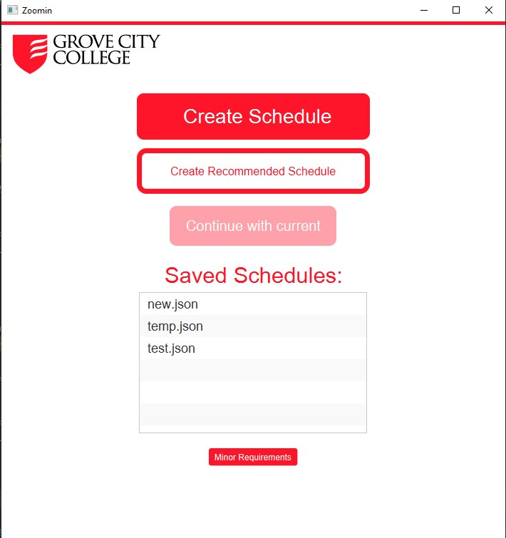

My Work This site too!!


Computer Scientist
I've always had a passion for computers and machines. In school, I wasn't sure how to turn this passion into a career until I joined my school's IT internship program. Instantly, I fell in love with working with computers. Now, I'm pursuing my degree at Grove City College, set to graduate in spring 2024. I enjoy unraveling the inner workings of computers and their languages. I'm tenacious, loyal, funny, and eager for any employment opportunity. Feel free to reach out to me through my social media accounts, email, or the contact messenger on this site. Thanks for visiting!
Skills
Experience
Education
Java and Python front or back end development. Experience with full software design process, including planning/design stages, customer-interaction, Agile workflow/philosophy (SCRUM), programming/coding (CI/CD), and testing
Learn moreI have strong proficiency in writing functional, object-oriented code in Java and Python. Additionally, I possess a decent understanding of C# programming language. With these languages, I can develop robust and scalable software solutions to meet various business needs.
In Java development, I have hands-on experience with the full-stack process, especially in following the Agile philosophy through SCRUM. This encompasses all stages of development, starting from customer interest and user journeys to diagramming and planning. I am adept at writing stub code, setting up version control with tools like Git/GitHub, and writing comprehensive unit tests to ensure code quality.
Throughout my development journey, I have utilized project management tools like Jira to plan and set up sprints, ensuring efficient collaboration and timely delivery. My expertise extends to implementing algorithms, writing efficient code, and considering performance optimization in Java projects.
I am well-versed in utilizing Docker for containerization, which helps in creating portable and scalable applications. I also have experience in UI design and modifying the user experience based on valuable feedback obtained through continuous integration and continuous deployment (CI/CD) practices.
I am enthusiastic about both back-end and front-end development and I am open to any tasks that an employer may present to me. I enjoy tackling challenges, learning new technologies, and delivering high-quality software solutions.
Unity Game Development. Experience with Unity in both 2D and 3D. Understanding of Game design concepts like risk/reward, triangularity, difficulty curves, and many (many) others
Learn moreUnity Game Development is one of my areas of expertise. I have extensive experience working with Unity for both 2D and 3D game development projects.
With my Unity skills, I can design and develop engaging games with intuitive gameplay, captivating visuals, and smooth performance. I am well-versed in utilizing Unity's scripting language, C#, to implement game mechanics, physics, artificial intelligence, user interfaces, and more.
In addition to technical proficiency, I also have a solid understanding of game design concepts that contribute to the overall player experience. Concepts such as risk/reward, triangularity, difficulty curves, pacing, level design, and player engagement are crucial elements in creating compelling and enjoyable games. I strive to incorporate these concepts into my game development process to ensure high-quality and immersive gameplay.
I am passionate about game development and constantly stay updated with the latest trends and technologies in the industry. I enjoy collaborating with teams and have experience working in Agile environments to deliver successful game projects.
IT support specialist. Experience with management of tasks/tickets and aiding with technical issues. Experience with setting up network switches and access points, along with their testing
Learn moreAs an IT Support Specialist, I have gained valuable experience in managing tasks and tickets, as well as providing assistance with various technical issues. I am adept at troubleshooting and resolving software, hardware, and network-related problems to ensure smooth operations and user satisfaction.
One of my areas of expertise lies in setting up network switches and access points. I have hands-on experience in configuring and deploying these devices to establish robust and secure network infrastructures. Additionally, I am skilled in conducting thorough testing to verify the functionality and performance of the network components.
In my role as an IT Support Specialist, I have developed a deep understanding of network protocols, routing, and security measures. I am proficient in diagnosing and resolving network connectivity issues, optimizing network performance, and ensuring data integrity.
Beyond network-related tasks, I am well-versed in managing tasks and tickets, utilizing ticketing systems to prioritize and address user requests efficiently. I possess strong communication and interpersonal skills, allowing me to provide excellent customer service and support to end-users.
I am continuously expanding my knowledge in the ever-evolving field of IT support and am eager to contribute my skills to provide reliable technical assistance to businesses and individuals.
I can create, design, and develope a customer's personal or business website to a customer's liking. The site will look sleek, smooth, and modern
Learn moreWith my skills in website development, I can create, design, and develop personalized websites tailored to the specific needs and preferences of my clients. Whether it's a personal portfolio, a blog, or a business website, I strive to deliver a seamless and captivating online presence that aligns with the client's vision.
As a testament to my capabilities, the current website you are viewing is an example of my work. I designed and developed this site to showcase my skills and expertise in website development.
When working with clients, I focus on creating websites that are not only visually appealing but also user-friendly and intuitive to navigate. I pay attention to the latest design trends and ensure that the websites I create look sleek, modern, and professional.
To achieve a seamless user experience, I employ responsive design techniques, making the websites adaptable to various devices and screen sizes. This ensures that the website looks and functions beautifully, whether accessed from a desktop, tablet, or smartphone.
Additionally, I have experience in implementing interactive elements, optimizing website performance, and integrating necessary functionalities such as contact forms, social media integration, and content management systems (CMS) like WordPress.
I am passionate about creating engaging and visually stunning websites that leave a lasting impression. I am committed to providing my clients with high-quality web solutions that enhance their online presence and help them achieve their goals.
Copyright © Zachary Goniea
yeah I like purple, so what?